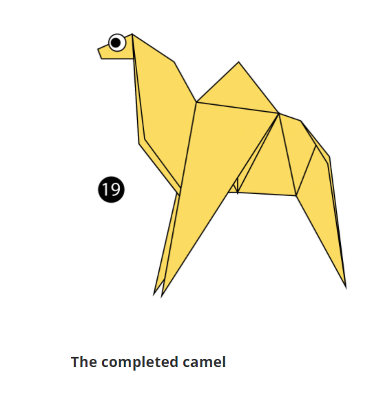
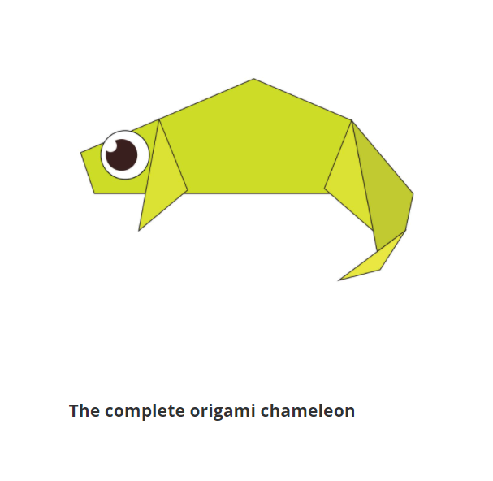
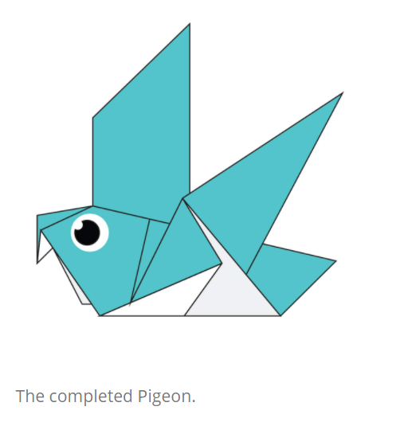
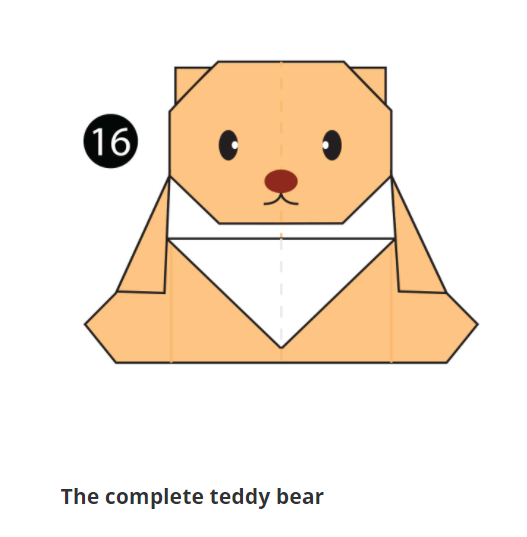
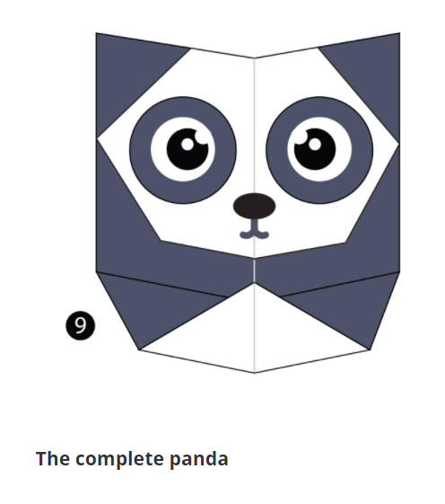
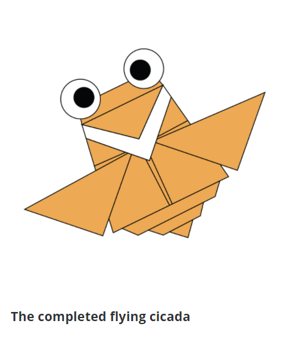

Origami Designs
About Us
Follow Us
Origami Camel:

Interesting Facts About Camels:
- 1) A camel's ears are furry.
- 2) Camels can move easily on the sand because of their specially designed feet.
- 3) When they find water they drink as much as possible.
Origami Chameleon:

Interesting Facts About Chameleons:
- 1) Chameleons are reptiles that are a part of the iguana suborder.
- 2) Changinging color is an important part of their communication.
- 3) They have prehensile tails that they use to wrap around trees.
Origami Pigeon:

Interesting Facts About Pigeons:
- 1) Pigeons are really complex and intellegent animals.
- 2) They are renowned for their outstanding navigational abilities.
- 3) Pigeons have excellent hearing abilities.
Origami Teddy Bear:

Interesting Facts About Bears:
- 1) Bears have excellent smelling abilities.
- 2) Bears are extraordinarily intelligent animals.
- 3) They have far superior navigation skills to humans.
Origami Panda:

Interesting Facts About Pandas:
- 1) Pandas eat consistently for 12-14 hours a day.
- 2) Adult panda bears can weigh as much as 45 kilos.
- 3) Pandas can swim.
Origami Flying Cicada:

Interesting Facts About Flying Cicada:
- 1) Cicadas can survive a huge fall as babies.
- 2) Some cicadas are really tiny.
- 3) They can sweat.